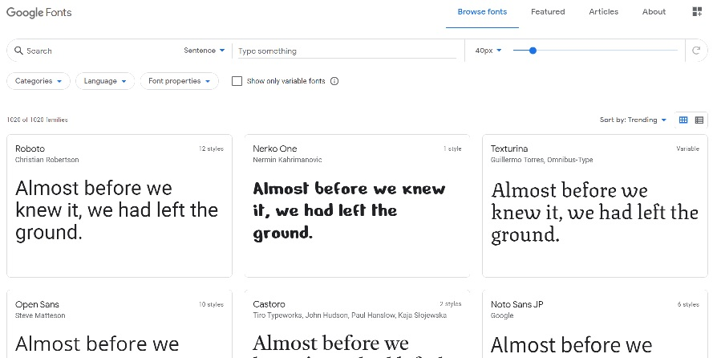
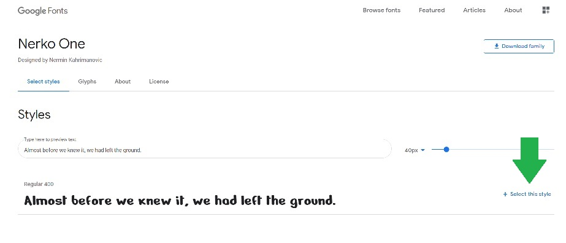
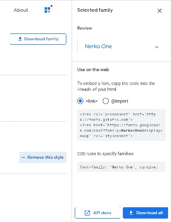
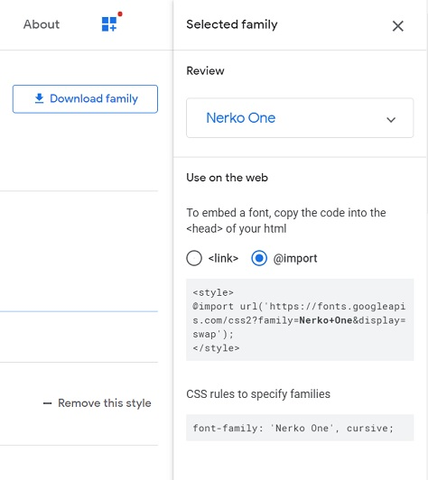
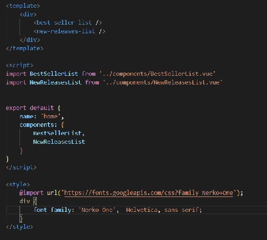

It's easy to include Google Fonts on your web pages. Here's how to do it...
Let's start with some sample text:
Here's the CSS for the above box:
.google-fonts-text-container {
border: 3px solid black;
padding: 10px;
width: 50%;
background-color: #ffe599;
}
Let's change the font to a more interesting one using Google Fonts
First, go to the Google Fonts site.
You should see something like this:
You can poke around and find a font you like, but we'll use Nerko One. If you click on one of the fonts, you will see something similar to this:
Note the + Select this style button where the green arrow is pointing in the image above. (The arrow is my own addition - it wil not be on the page). If you click there, a sidebar similar to this one should open up:
This provides you with info you need. Let's look at what's in the box under the <link> radio button (make sure you select it).
<link rel="preconnect" href="https://fonts.gstatic.com">
<link href="https://fonts.googleapis.com/css2?family=Nerko+One&display=swap" rel="stylesheet">
The first line is used to help fonts be available as quickly as possible - you don't need to know too much about how this works but it's good to include.
The second line is the link that actually includes the specific font you want. The family=Nerko+One is the part of the link that specifies the name of the font you want to use. The plus sign in Nerko+One is how you represent a space when specifying the family name. If you want to use a different font, you would substitute its name
You should include these two link elements in the <head> section of your HTML.
The above works for vanilla HTML/Javascript pages but if you are using Vue you need to do this a little differently.
In that sidebar I mentioned, the other option is @import
What you see in the box there is
<style>
@import url('https://fonts.googleapis.com/css2?family=Nerko+One&display=swap');
</style>
Notice the <style> tag?
You can add the @import into the style section of your component or in the main component (i.e. App.vue) if you want it available to all components.
Once you have included the link to the font, you can use it like any other font but you have to put the name in quotes. The CSS rules to specify families section of the sidebar shows you an example for the font:
font-family: 'Nerko One', cursive;
Let's go ahead and create a style we can use in our sample to show how to apply the font.
.nekro-one {
font-family: 'Nerko One', Helvetica, sans-serif;
}
Here's what our sample looks like with the style applied:
That's all there is to it... you now have lots of great fonts at your disposal.